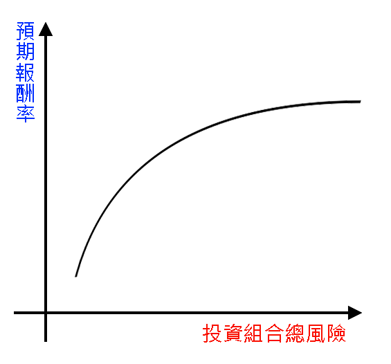

聲明頁
本系統採用諾貝爾經濟學獎模式
Harry Max Markowitz 1990 Nobel Memorial Prize in Economic Sciences
以每支股票歷史報酬率平均來達成期望值之預估
使用本系統資產配置功能之報酬率與風險關係，將會如下圖：(本圖依據效率前緣法繪製)

選擇資產配置股票數量與風險之關係如下圖所示：
系統期望目標
如下:
- 期待本系統能夠幫助台灣青年提早體驗投資理財，趕上並超越國外青年。
- 對股市投資理財有興趣的朋友，也能受惠於我們發展的系統，將有限的資金，做適當的資產配置，以達成最大的效益，造福社會！
其他股票投資資訊連結： 連結.
資產配置結果不是必定符合預期報酬。